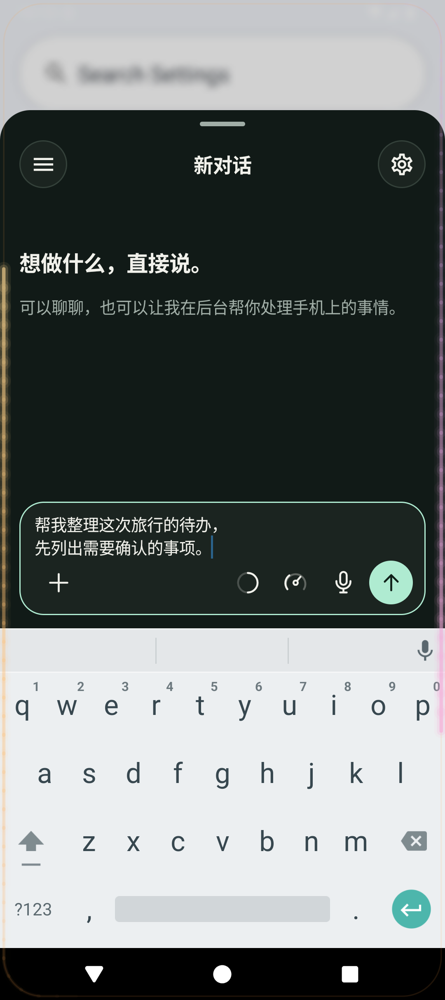
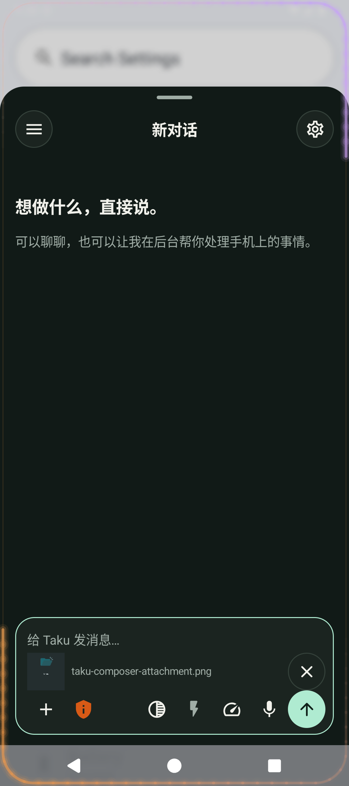
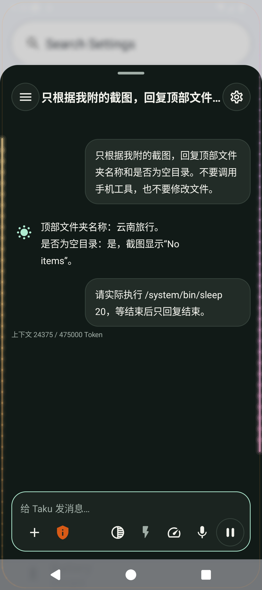
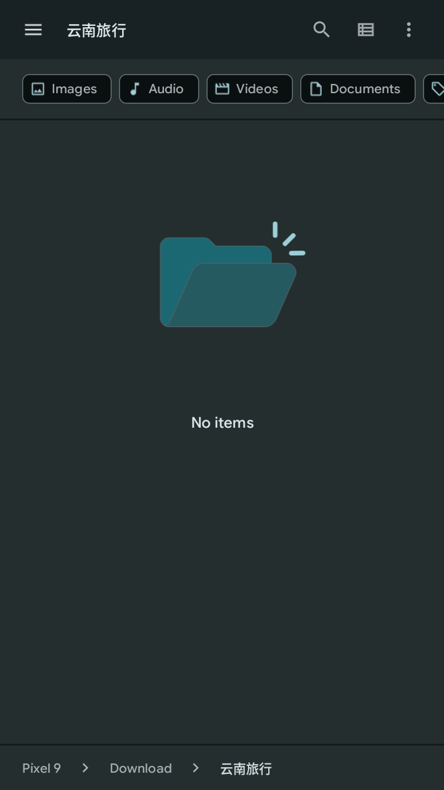
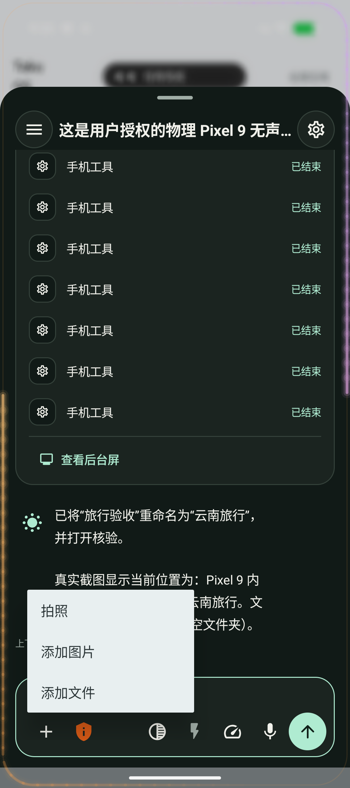

TAKU OS / 2026.10.15 / v47
Bring actions into the composer
Removed the persistent Background display button below the composer and, following the Codex mobile reference, removed the lightning and warning shield while retaining attachment, model ring, dashboard, voice, and Send. Icons use a consistent 24dp canvas, rounded strokes, and centered 44dp buttons. During execution, an empty field shows Stop; typed instructions append to the same turn.
Real-model acceptance completedEmulator system picker attached an image → model correctly recognized “Yunnan trip / empty directory” (translated); running task → Stop → actual task status cancelled. Additional instructions changed the real reply in the same turn; cancelling the approval sheet prevented the actual phone tool from executing. No mock model responses were used.

Emulator: multiline draft and compact toolbar remain usable with the keyboard open.
Emulator: after the system file picker returns, a thumbnail, filename, and remove button appear.
Emulator: Send becomes Stop during a task; typing text shows the append-instruction action.
Pixel 9: the real GUI created, renamed, and opened Download / Yunnan trip (translated folder name), confirming an empty directory.Toolbar menu
The current composer style is in the first v47 emulator screenshot. Menu and functional acceptance screenshots below are from v46; models and reasoning levels come from the actual runtime catalog, and settings apply to the current conversation.

Attachments: camera, images, filesAcceptance boundariesv47 styling and keyboard checks were completed on the emulator; real-model functional acceptance is from v46. Pixel 9 had the initial v46 build before disconnection; subsequent attachment fixes had not reached the phone. Voice is connected to local recognition, but the ROM has no recognition engine and explicitly reports unavailability. The camera entry exists but photography was not tested in this round.
The emulator retained its original account and conversations; touch sounds and stay-awake-while-plugged-in were restored to their original values (1 / 1). Temporary Pixel 9 touch-sound and stay-awake settings still need restoration after reconnection.